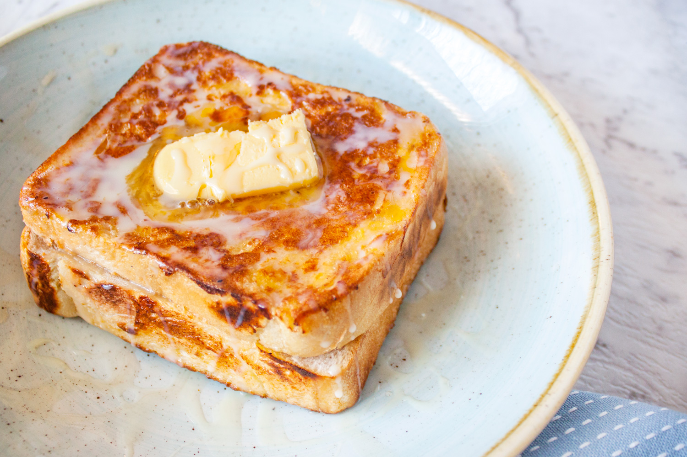
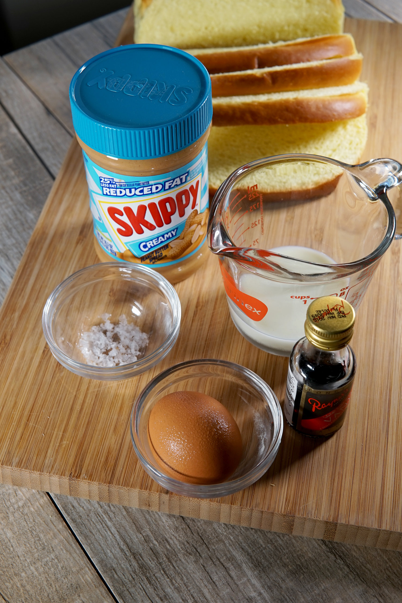

HK STYLE FRENCH TOAST

Layered French toast stuffed with peanut butter, coated in egg and shallow fried. Delicious with condensed milk and butter. A popular Hong Kong café dessert!
Hong Kong French Toast is a thick Asian milk or egg bread and layered with peanut butter or a spread of your choice. The crust of the bread is cut off to create the perfect square and then it is coated with egg and shallow fried in oil. When it is served, it comes with butter on top with maple syrup, honey or condensed milk.

INGREDIENTS
- square milk or egg bread
- peanut butter
- eggs
- cooking oil
- butter
- condensed milk, honey, or maple syrup
IINSTRUCTIONS
- With three pieces of bread, spread a thin layer of peanut butter on 2 of the three pieces. Sandwich them together. Repeat for the other sandwich
- Slice off the crusts of your sandwiches with a very sharp knife to create a square.
- In a shallow bowl, whisk 2 eggs.
- In a deep pan, fill it with a shallow layer of cooking oil (avocado or vegetable). Bring it to low medium heat (level 4 out of 10). Do not bring it to medium or the toast will burn.
- Lightly coat one sandwich in egg
- Then carefully lower that sandwich into the hot oil. Fry on all sides until golden brown (15 seconds on the sides and 30 seconds on the larger surface area).
- Enjoy hot with butter and sweetener of your choice!